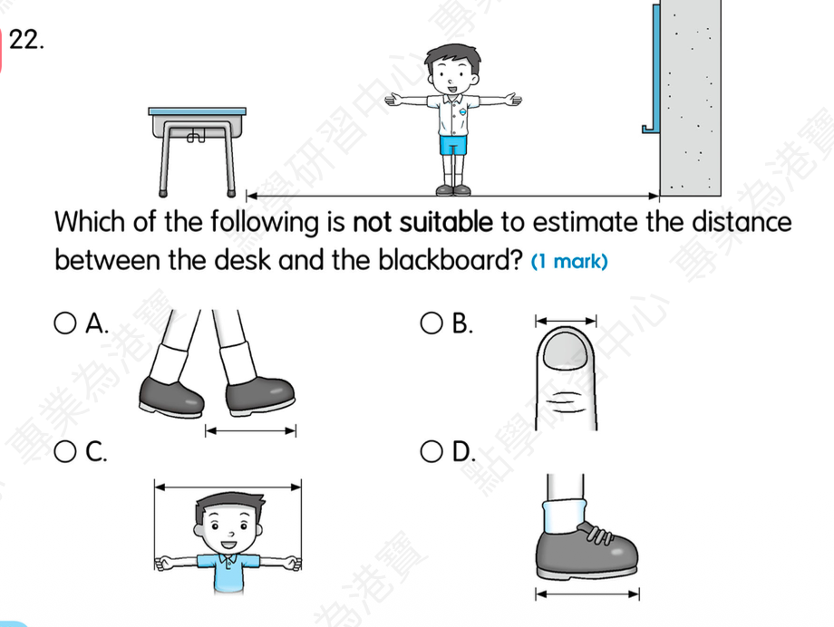
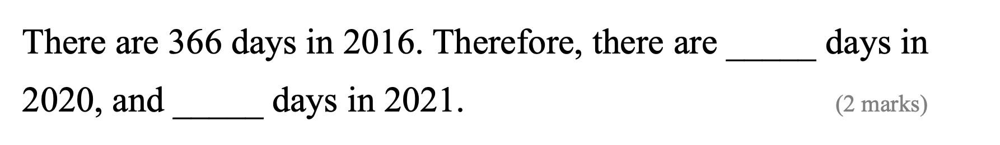

The children ________ (play) outdoors now.
Answer: are playing
Explanation: 根据 look/listen/now 等提示判断现在进行时，结构为 be + 动词ing。
已掌握
| # | 单词/词组 | 中文意思 | 例句/说明 | 已掌握 |
|---|---|---|---|---|
| noun 名词 | ||||
| 1 | picnic | 野餐 | We have a picnic in the park. | |
| 2 | garden | 花园 | We play in the garden. | |
| 3 | church | 教堂 | The old church is quiet. | |
| 4 | minute | 分钟 | Please wait a minute. | |
| 5 | flower | 花 | This flower is red. | |
| 6 | pupil | 小学生 | The pupil reads a book. | |
| 7 | doctor | 医生 | I can use doctor in class. | |
| 8 | glasses | 眼镜 | He wears glasses. | |
| verb 动词 | ||||
| 9 | put away | 收拾、收纳 | I can use put away in class. | |
| 10 | tell story | 讲故事 | I can use tell story in class. | |
| 11 | dig | 挖 | The dog can dig a hole. | |
| phrase 短语 | ||||
| 12 | do sums | 数学计算 | We do sums in math class. | |
| 13 | stay at home | 留在家里 | We stay at home on rainy days. | |
| 14 | wait a minute | 等一下 | Wait a minute, please. | |
| 15 | school bus | 校车 | I can use school bus in class. | |
| adjective 形容词 | ||||
| 16 | busy | 忙碌的 | I can use busy in class. | |
| 17 | smart | 聪明 | The smart child solves the problem. | |
| pronoun 代词 | ||||
| 18 | they | 他们 | They are my friends. | |
| uncategorized 未分类 | ||||
| 19 | amazing | 很好的 | I can use amazing in class. | |
| 20 | find | 找到 | I can use find in class. | |
| # | 单词/词组 | 中文意思 | 例句/说明 | 已掌握 |
|---|---|---|---|---|
| adjective 形容词 | ||||
| 1 | thick | 厚的 | This book is thick. | |
| noun 名词 | ||||
| 2 | riddle | 谜语 | I can solve the riddle. | |
| 3 | pronoun | 代词 | He is a pronoun. | |
| 4 | leader | 领导者 | The leader helps the group. | |
| 5 | character | 角色；人物 | The story has many characters. | |
| 6 | blog | 博客 | I can use blog in class. | |
| 7 | venue | 地点 | The venue is near our school. | |
| 8 | fable | 寓言 | The fable has a lesson. | |
| 9 | clue | 线索 | This clue helps me. | |
| 10 | musician | 音乐家 | The musician plays music. | |
| 11 | roundabout | 旋转木马 | The roundabout is in the playground. | |
| 12 | tutor | 家庭教师 | My tutor helps me study. | |
| 13 | timetable | 时间表 | The timetable shows my classes. | |
| verb 动词 | ||||
| 14 | weigh | 称重 | We weigh the bag. | |
| 15 | collect | 收集 | I collect stamps. | |
| 16 | describe | 描述 | I can describe the picture. | |
| phrase 短语 | ||||
| 17 | Causeway Bay | 铜锣湾 | I can use Causeway Bay in class. | |
| 18 | reading comprehension | 阅读理解 | I can use reading comprehension in class. | |
| 19 | capital letters | 大写字母 | I can use capital letters in class. | |
| 20 | simple present tense | 一般现在时 | I can use simple present tense in class. | |
| uncategorized 未分类 | ||||
| 21 | False | 错误的 | I can use False in class. | |
| 22 | adjectives | 形容词 | I can use adjectives in class. | |
| 23 | improvement | 提升 | I can use improvement in class. | |
| 24 | thief | 小偷 | I can use thief in class. | |
| 25 | organic | 有机的 | I can use organic in class. | |
| 26 | royal | 皇家的 | I can use royal in class. | |
| 27 | stone | 石头 | I can use stone in class. | |
| 28 | knowledge | 知识 | I can use knowledge in class. | |
| 29 | campsite | 营地 | I can use campsite in class. | |
| adverb 副词 | ||||
| 30 | accidently | 偶然地 | I can use accidently in class. | |
| # | 单词/词组 | 中文意思 | 例句/说明 | 已掌握 |
|---|---|---|---|---|
| time/date 时间日期 | ||||
| 1 | July | 七月 | July is the seventh month. | |
| 2 | December | 十二月 | December is the twelfth month. | |
| 3 | Tuesday | 星期二 | Tuesday is a weekday. | |
| time unit 时间单位 | ||||
| 4 | minute | 分 | A minute has 60 seconds. | |
| directions 方向 | ||||
| 5 | west | 西 | The sun sets in the west. | |
| numbers 数字 | ||||
| 6 | seven | 7 | Seven is 7. | |
| 7 | seventeen | 17 | Seventeen is 17. | |
| 8 | forty | 40 | Forty is 40. | |
| 9 | thousand | 千 | One thousand is 1000. | |
| ordinal numbers 序数 | ||||
| 10 | second | 第二 | This is the second shape. | |
| solid shape 立体图形 | ||||
| 11 | triangular prism | 三棱柱 | A triangular prism has triangular faces. | |
| 12 | hexagonal prism | 六棱柱 | A hexagonal prism has hexagonal faces. | |
| 13 | pentagonal pyramid | 五棱锥 | A pentagonal pyramid has pentagonal faces. | |
| 14 | cylinder | 圆柱 | A cylinder has two circular faces. | |
| 15 | sphere | 球 | A sphere is round. | |
| # | 单词/词组 | 中文意思 | 例句/说明 | 已掌握 |
|---|---|---|---|---|
| operations 运算 | ||||
| 1 | subtraction | 减法 | Subtraction means taking away. | |
| 2 | borrowing | 借位 | Borrowing helps when we subtract. | |
| 3 | be left | 剩下的 | How many apples will be left? | |
| question word 题目词 | ||||
| 4 | calculate | 计算 | Calculate the answer. | |
| 5 | estimate | 估计 | Estimate the answer first. | |
| 6 | count | 数数 | Count from 1 to 10. | |
| 7 | match | 匹配 | Match the number to the word. | |
| 8 | respectively | 分别地 | Tom and Ben have 2 and 3 books respectively. | |
| comparison 比较 | ||||
| 9 | less | 更少的；小于 | 8 is less than 10. | |
| 10 | more | 更多 | 8 is more than 5. | |
| 11 | fewer | 更少 | There are fewer apples in this box. | |
| time/date 时间日期 | ||||
| 12 | leap year | 闰年 | A leap year has 366 days. | |
| 13 | non-leap year | 平年 | A non-leap year has 365 days. | |
| position 位置 | ||||
| 14 | above | 上面 | The clock is above the board. | |
| operations calculation 运算 | ||||
| 15 | difference | 差 | The difference is the answer in subtraction. | |
| 16 | subtract A from B | B-A | I can read subtract A from B in a math question. | |
| 17 | quotient | 商 | The quotient is the answer in division. | |
| 18 | remainder | 余数 | The remainder is left after division. | |
| 19 | horizontal form | 横式形式 | Write it in horizontal form. | |
| teacher math vocabulary 老师数学词汇 | ||||
| 20 | finish | 完成 | I can read finish in a math question. | |
| 21 | start | 开始 | I can read start in a math question. | |
| 22 | stop | 停 | I can read stop in a math question. | |
| currency money 货币 | ||||
| 23 | dollar | 元 | One dollar has 100 cents. | |
| 24 | pay for | 支付 | I pay for the book. | |
| 25 | note | 纸币 | This is a five-dollar note. | |
| 26 | expensive | 昂贵的 | I can read expensive in a math question. | |
| measurement 测量 | ||||
| 27 | measure | 测量 | We measure the length with a ruler. | |
| 28 | distance | 距离 | Find the distance between the two points. | |
| 句型结构 | ||||
| 29 | Angle ... is larger than Angle ... | 角......大于角...... | Angle A is larger than Angle B. | |
| 30 | Angle ... is the smallest. | 角......是最小的。 | Angle B is the smallest. | |



